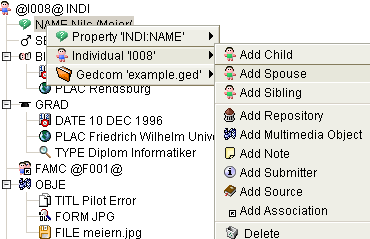
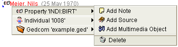
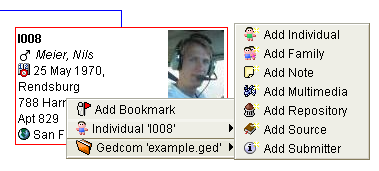

The most important thing to try while working with GenJ is triggering the context-menues. A right-click (your platform might have a different mouse action to trigger them) on the information displayed in one of the views will reveal actions you can take.
The context-menu always is structured the same way : at first place it shows a sub-menu for what you have clicked on and then subsequentially more sub-menues that broaden the context.
In the following example the context for a Name-property is shown. The first sub-menu is for the property itself and actions on it, the second sub-menu is for the entitiy (here an Individual) this property belongs to, the third sub-menu is for the file (Gedcom) the entity belongs to.
The sub-menu for the Individual 'I008' shows the following actions:
The next example again shows a context-menu for a property but this time the actions for the property itself are shown (first sub-menu).
These are the actions offered:
Lastly an example which shows the dynamic content of the context-menues. The special circumstances explained:
The actions shown in the opened sub-menu allow to create un-related/referenced* entities in file example.ged .
it's better to grow information and create entities that are related to existing ones through the first (two) sub-menues